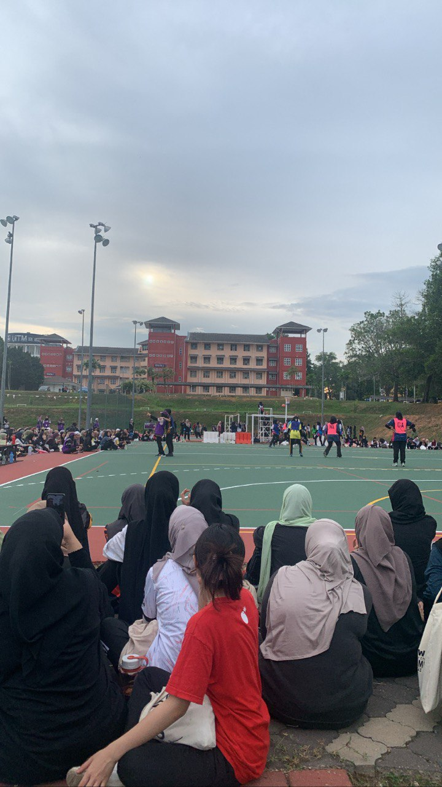
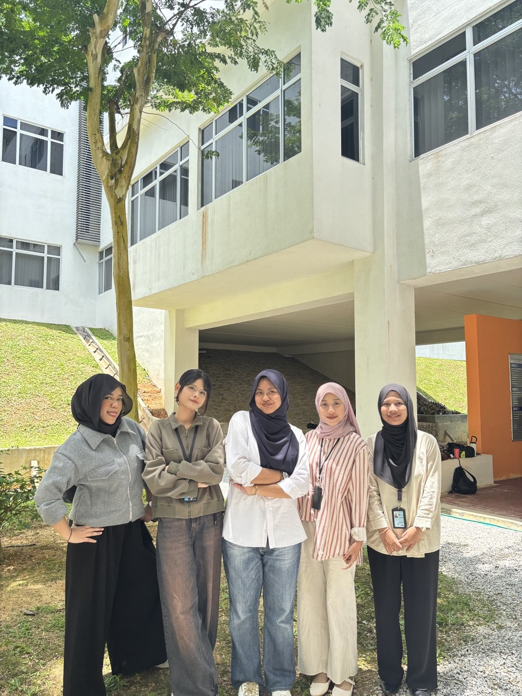
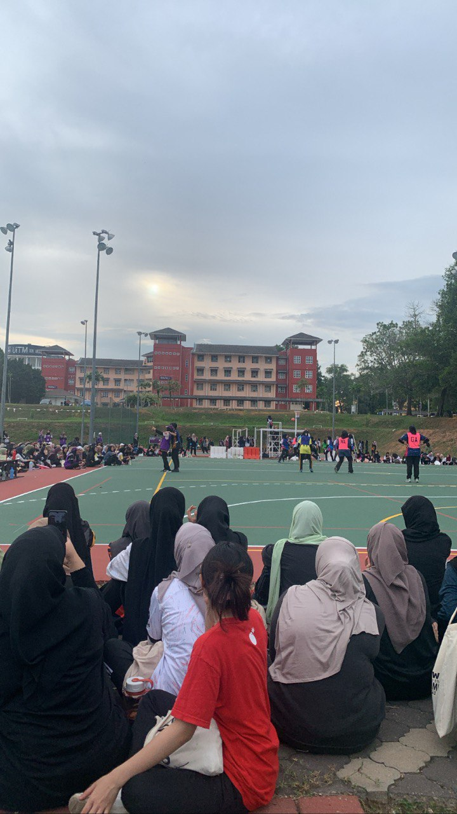
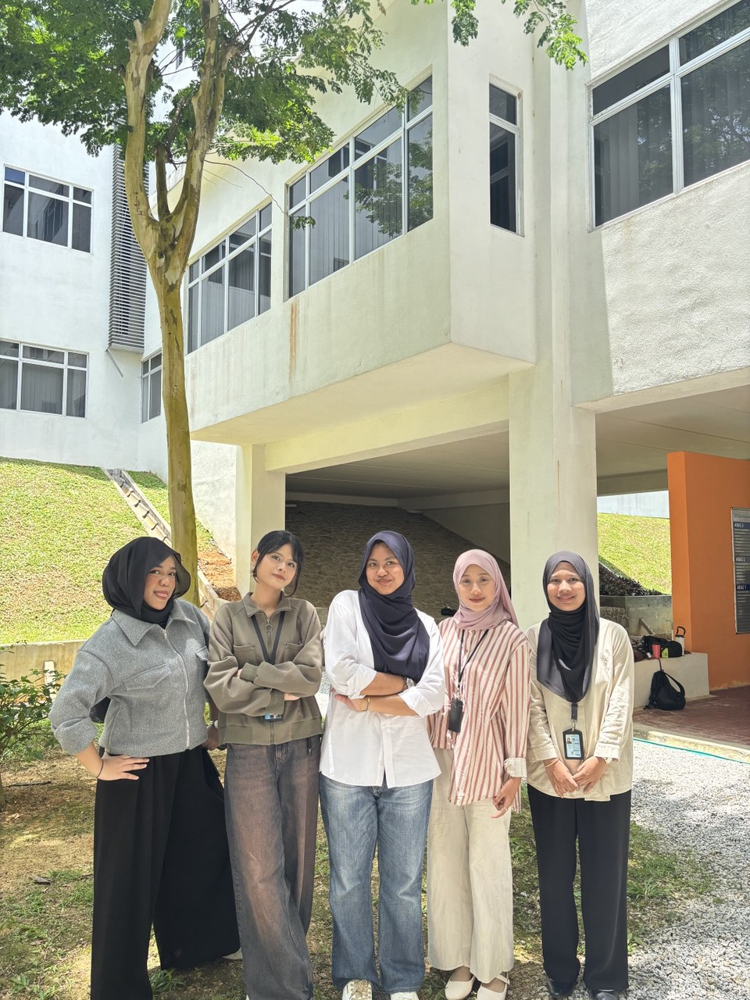

Education
I started my education at Sekolah Kebangsaan Labohan Dagang, where I studied from 2011 to 2016. After completing my primary school, I continued my secondary education at Sekolah Menengah Kebangsaan Bukit Changgang from 2017 until 2021. After finishing high school, I enrolled in a six-month pre-diploma programme in Business as a foundation before pursuing my diploma. In 2023, I began my Diploma in Information Management at UiTM Rembau. Currently, I am in my final semester and expected to complete my studies in July 2025.
 


